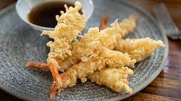

Tempura Recipe

Description
Tempura (天ぷら or 天麩羅, tenpura) is a typical Japanese dish that usually consists of seafood and
vegetables that have been coated in a thin batter and deep fried.
Ingredients
- Tempura batter
- Tempura Ingredients like shrimp
- Oil for frying
- Condiment
Steps
- Prepare Tempura batter
- Prepare ingredient
- heat the oil
- coat the ingredients
- fry the tempura
- drain excess oil
- serve